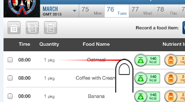
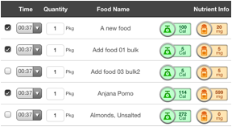
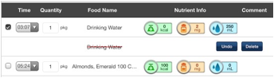
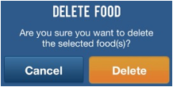
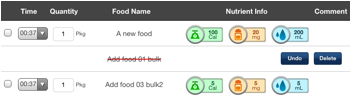

The Food Summary page includes a "Delete" icon button (the trashcan icon) on the top left of the screen:

This "Delete" icon button will be disabled (gray) until you select at least one food item (checkmarks will appear in the boxes on the left side of the screen for the item(s) when selected):

Once you have selected the food item(s) you would like to delete the “Delete” button will be displayed like the following:

Finally, confirm that you really want to delete the selected items by clicking the “Delete” button. All the selected food items will be removed from your consumption history. It will display a confirmation popup like the following:.

Another way to delete a food item from your consumption history is to perform a left to right swipe command over the food name. After that a red line will appear through the food item you swiped, and two buttons will appear:

To delete the food item, press the "Done" button and the food item will be removed from your consumption history. To cancel this delete action, click the "Undo" button to cancel this command and keep the food item in your consumption history.